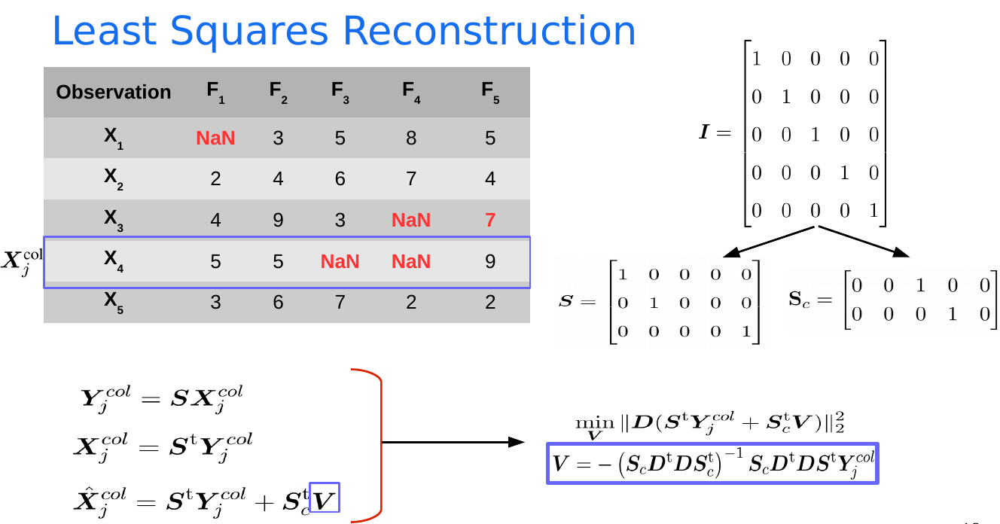

Crop Use Case¶
The objective of this section is to get familarized with manipulating structred data.
Dataset Preparation¶
To prepare the crop dataset, follow these steps:
Download Sentinel-2 images: using the Google Cloud Storage download notebook.
Download the Registre Parcellaire Graphique (RPG) of France.
Intersect the RPG with the extent of the downloaded Sentinel-2 tile.
Preprocess Sentinel-2 images using the Sentinel-2 preprocessing notebook.
Exract image features such as the Normalized Difference Vegetation Index (NDVI), the Green Red Vegetation Index (GRVI), the Green Normalized Difference Water Index (NDWIGREEN) using the feature extraction notebook.
Compute parcel-level statistics using the image features and the shapefile using the stats estimation notebook.
Construct temporal statistics at the parcel-level using the temporal stats notebook.
Data Inspection, Preprocessing and Visualization¶
Data Inspection¶
This step is mandatory in all machine learning experiments. It allows discovering the dataset characterstics, its errors such as missing data in order to be correctly processed. It also allows exploring other properties of the data such as the distribution.
Data Preprocessing¶
One of the most common cases of data preprocessing is missing data handling. Missing data arises in multiple applications due to sensor malfunction, environmental impacts, etc. In remote sensing, missing data are usually caused by cloud coverage. Most of the machine learning classification and regression algorithms do not handle missing data except some algorithms such as the Long Short Term Memory (LSTM).
Multiple methods exist to handle missing data:
Mean imputation
This method is considered as the simplest method of missingdata reconstruction. It simply replaces each missing value bythe mean of the observed values remaining for that variable.However, this approach can severely modify the distributionof the missing variable, which may lead to complications suchas underestimating the standard deviation and distortion ofthe relationships between the different variables by pullingcorrelation estimates toward zero.
Interpolation
Interpolation is a statistical method that uses known values to estimate the unknown ones. Interpolation uses other known values located in the same sequence with the unknown values.
Least saqures reconstruction
A statistical method to reconstruct missing data that aims at minimizing the energy of the second order deriviative of an observation. It is similar to Spline interpolation and uses known values from the same sequence to estimate the missing ones.
K-nearest neighbors reconstruction
The kNN reconstruction is an extension of thekNN algorithm, which finds thekmost relevant complete ob-servations using the Euclidean distance and weights the contribution of each observation in the missing data.
Iterative imputation
Gaussian Mixture Models (GMM)
A dataset that contains missing data
Mean imputation

LSR reconstruction
KNN reconstruction
Data Visualization¶
Data visualization is one of the disciplines in data science and analytics tha aims at visually understanding the data in order to discover patterns and trends (“a picture is worth a thousand words”). Python is rich of libraries for data visualization such as matplotlib* , Plotly* and Dash* among others.
Evaluation Metrics¶
Multiple evaluation metrics can be used to evaluate the performance of clustering, classification and regression algorithms. In what follows, we will focus on some evaluation metrics that can be used to evaluation the performance of classification algorithms, i.e., when ground truth labels are available.
Accuracy¶
This metric tries to respond to the follow question: what is the proportion of the dataset that is correctly classified?
Confusion Matrix¶
A KxK matrix that is used to evaluate the performance of a machine learning model where K is the number of classes. It compares the actual target values with the predicted ones.
Precision¶
This metric tries to answer the following question: what proportion of positive identifications is correctly classified?
Recall¶
This metric tries to answer the following question: What proportion of actual positives is identified correctly?
F1 Score¶
It is a metric that ensures the balance between precison and recall
Unsupervised Machine Learning¶
Unsupervised learning algorithms have a very important role in machine learning due to their capabilities in exploring datasets without any prior knowledge (no labels and no assumptions on the underlying distribution of the data). Classic examples of unsupervsied machine learning algorithms are represneted in dimensionality reduction techniques such as the Principal Component Analysis (PCA)* and clustering techniques such as the K-means*
Principal Component Analysis¶
A technique that aims at finding the dimensions (principal components) that maximizes the variance of the dataset (global structure). The steps of PCA can be summarized as follow:
Standarize the dataset by substracting the mean and dividing by the standard deviation.
Estimate the Eigen values and Eigen vectors from the covariance matrix or the correlation matrix.
Sort the Eigen vectors in a descending order using their corresponding Eigen values.
Select K vectors with the highest Eigen values.
Construct the projection matrix from these Eigen vectors.
Transfrom the standarized dataset using the projection matrix.
KMeans Algorithm¶
The KMeans is an unsupervised algorithm used for data clustering. Clustering is the process of finding the natural grouping in a dataset without any prior assumption on the distribution of the dataset. The KMeans algorithm aims at partioning a set of observations into \(k\) clusters, which if fixed apriori. Each observation is assigned to the cluster whose mean (center) is the closest to this observation. Hence, the KMeans algorithm aims at minimizing the intra-cluster distance. The following figures is an intuitive explanation of the KMeans algorithm.
A set of observations to be clustered using the KMeans algorithm
Two centers are randomly initialized
Observations are assigend to clusters whose centers are the closest to the observations
The cluster centers are estimated by computing the mean of all the observations that belong to the same cluster
Supervised Learning¶
Supervised algorithms learn a mapping function from input variables(training samples) and output continuous or discrete variables y (such as labels) of the form y = f (X). The main objective is to obtain an accurate approximation of the mapping function in order to predict the output for new input data. Many supervised classification algorithms have been studied in the literature for the determination of this mapping function. One can mention the k-nearest neighbors (kNN), the multi-class support vector machines (SVM), the classification and regression tree (CART), the random forest (RF), the extreme gradient boosting (XGBoost) algorithms. Neural networks algorithms are also used for supervised learning tasks. One of the interesting neural networks algorithms for time series is the longs short term memory (LSTM) algorithm. In what follows, we will concentrate on the XGBoost and LSTM algorithms.
The XGBoost algorithm¶
Boosting algorithms are a type of learning techniques working sequentially in order to improve the prediction accuracy. In this kind of algorithms, a series of weak classifiers are combined where a single classifier is constructed at each time. Each classifier focuses on the errors of the previous one by giving higher weights to the misclassified samples. Let us assume a binary classification problem, i.e., two classes, with 5 positive and 5 negative samples. A first weak classifier (D1) is constructed. The classifier D1 managed to correctly classify two positive samples (in the blue area) and 5 positive examples (in the red area). However, 3 of the positive examples were misclassified. Hence, these 3 samples were assigned higher weights than other samples and would be the focus of the next classifier, namely D2. Similar to D1, D2 managed to correctly classify the samples of interest (those associated with higher weights after D1), but three negative examples (in the blue area) were misclassified and would be assigned higher weights to be the focus of D3. Similarly, D3 managed to classify the samples of interest, but it also misclassified other samples (1 negative and 2 positive samples). A combination of the three classifiers (an ensemble of classifiers) would manage to classify all the samples correctly.
The LSTM algorithm¶
It is a special type of the Recurrent Neural Networks (RNN). In an RNN model, each time step is processed separatly as time steps are not processed all together. The output of a memory unit at a time step t (state (t+1)) is forwarded to the memory unit processing t+1. The output of t+1 is a combination of the input and the state. However, the RNN can’t keep memory of old states due to numerical problems (vanishing gradient).
The LSTM algorithm solves the previous problem by proposing the carry track that allows propagating old states. The carry at t is then computed using the input and output at t as well as the carry at t-1.
In RNN each time step is processed separately and the time steps are not processed all together. The output of a memory unit at a time step t (state (t+1)) is forwarded to the memory unit processing t+1. The output of t+1 is a combination of the input and the state.